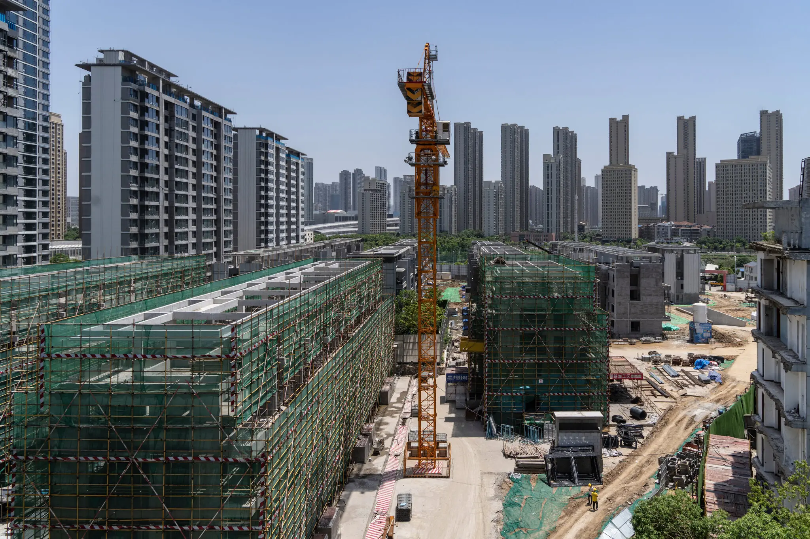
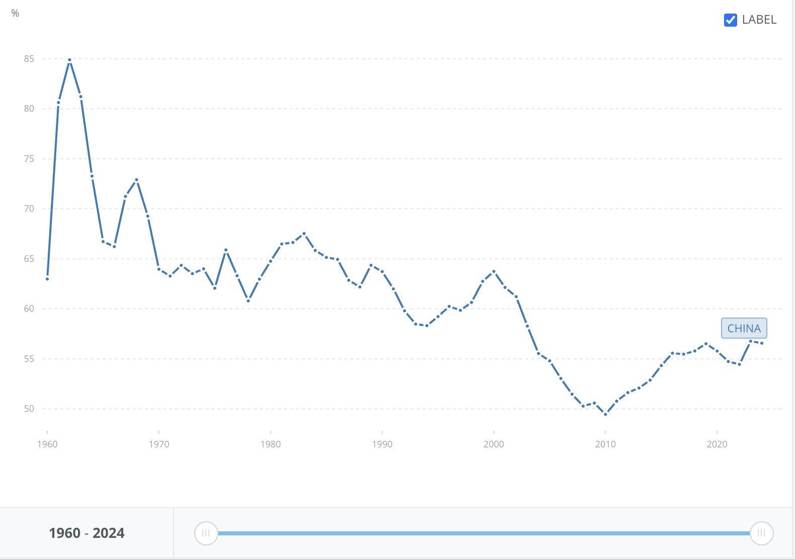

For decades, China's rapid economic expansion was seen as one of the greatest development stories in modern history. Now, with its lowest growth targets in decades, economists are asking whether it's the end of China's economic growth miracle. China has gone from one of the fastest growing economies in modern history to an economy now targeting only 4.5%-5% GDP growth. China has experienced decades of double digit GDP growth, historically driven by exports, construction, infrastructure investment, and cheap labor. However, China can no longer depend on the export and investment strategies that fueled its historic rise. Structural challenges including weak domestic demand, declining investment productivity, property sector instability, and demographic pressures require China to transition toward a consumption-led and innovation-based growth model (Hawkins, 2026; IMF, 2026a; IMF, 2026b; OECD, 2025).
The end of China's traditional growth model
China's old growth strategy functioned as an income "catching-up” model driven by government-driven capital investment and a powerful export system (Kohsaka, 2025). This approach was successful because diminishing returns to capital were slow to materialize as the economy transitioned from a low-income base (Kohsaka, 2025). The strategy is losing its effectiveness as the historical gains from mass urbanization and economic formalization fade. The record low GDP growth target of 4.5% for 2026–compared with the double-digit growth rates China frequently achieved during the 2000s and the 5% target set for 2025–reflects a shift away from the traditional economic drivers of construction and exports, toward high-quality growth led by hi-tech industries (Hawkins, 2026). This slower growth will not be temporary, as over the medium term growth will continue to decelerate further as the labor force declines, investment returns fall, and productivity slows (IMF, 2026a). China has reached a state where simply increasing investment will no longer generate the same returns. The slowdown in GDP growth reflects China's structural transition to maintain long-run economic growth, and not just short-term economic weakness (IMF, 2026a).
Why is growth slowing? China's major structural challenges
There are several structural challenges that are slowing China's growth. One of the most significant is weak domestic demand. China's growth model has long relied on investment and exports rather than household consumption. Final consumption expenditure represented only 53.8% of China's GDP in 2023, compared with 80.1% in the United States (World Bank, n.d.-b), meaning that relatively low consumer spending limits aggregate demand and constrains GDP growth (IMF, 2026a; IMF, 2026b; OECD, 2025). At the same time, an ailing property sector and high debt levels further undermine the old investment-heavy model (Hawkins, 2026; IMF, 2026a). The property market, once a major engine of expansion, now poses one of the country's greatest economic risks. The IMF estimates that continued sizable declines in real estate investment could reduce GDP growth by as much as 1 percentage point below baseline projections (International Monetary Fund [IMF], 2024), while both the IMF and OECD warn that continued contraction could reduce investment spending, weaken consumer and business confidence, and slow overall economic momentum (IMF, 2026a; OECD, 2025). Demographic pressures present another long-term challenge. According to the World Health Organization (n.d.), “China has one of the fastest growing ageing populations in the world”, with a projected 28% of the population aged 60 years and above by 2040 (World Health Organization [WHO], n.d.). China's ageing population and declining labor force are expected to reduce productive capacity, contributing to the IMF's projection that GDP growth will slow to 4.5% in 2026 and decelerate further over the medium term as productivity growth weakens (IMF, 2026a). Finally, unprecedented tariffs and global trade policy uncertainty expose vulnerabilities of China's export-reliant economy, demonstrating how dependence on external demand leaves growth susceptible to international shocks. Despite ending 2025 with a record US$1 trillion trade surplus, growth is projected to slow as prolonged tariffs and trade policy uncertainty increasingly weigh on China's traditional export-led model (Hawkins, 2026; IMF, 2026a; OECD, 2025).

Source: The New York Times (2026).
China's proposed economic reinvention
The IMF's proposed economic reinvention for China centers on a shift toward consumption-led growth (IMF, 2026a; IMF, 2026b). According to the International Monetary Fund (2026), ”shifting resources away from industrial subsidies and infrastructure and toward social safety net programs and stabilizing the property sector”, will improve household financial security, reducing precautionary savings and increasing consumer spending, which would increase aggregate demand (IMF, 2026a; IMF, 2026b; IMF, 2024). Additionally, expanding the service sector–which in 2024 was 56.7% of China's GDP and is currently smaller compared to the world level of 63.3% of GDP (World Bank, n.d.-a)– is essential for creating jobs and diversifying the economy (IMF, 2026b). According to the OECD (2025), this expansion could occur through liberalisation in sectors such as health care and childcare, alongside reforms to wage-setting mechanisms designed to support higher wages (OECD, 2025). Deeper market-oriented structural reforms, such as leveling the playing field between private and state-owned firms, would allow for more efficient capital allocation and boost productivity growth, addressing some of the structural inefficiencies that currently limit China's economic potential (IMF, 2026b). The IMF (2026) notes that directing capital toward less productive borrowers contributed to rising debt and weakened financial institutions, suggesting that improved allocation could significantly enhance productivity and long-term growth (IMF, 2026b). Important fiscal and banking reforms, including recapitalizing major state-owned banks to expand lending capacity, easing mortgage lending, and ensuring policy liquidity, serve as necessary short-term stabilization tools (IMF, 2026; OECD, 2025). However, both the OECD (2025) and the IMF (2026) argue that these measures alone are insufficient and must be paired with broader structural reforms to sustain long-run growth (IMF, 2026b; OECD, 2025).
Importantly, the 15th Five-Year Plan does not fully mirror the IMF's proposals. While both recognize the need to expand domestic demand and reduce reliance on traditional growth drivers, the CCP's strategy continues to emphasize technological self-reliance and state-directed support for strategic industries (Taylor, 2026; IMF, 2026b). Taylor (2026) notes that, despite stronger language promoting consumption, "there are no signs of the CCP shifting to a consumerist growth model” (Taylor, 2026). Instead, raising domestic demand is presented as a means of increasing China's resilience and self-reliance while maintaining support for advanced manufacturing (Taylor, 2026). This suggests that China's economic reinvention may involve selective market reforms without abandoning the state's central role in guiding development. Whether this hybrid approach can generate the productivity gains needed to offset demographic and investment headwinds remains one of the central questions facing China's economy.

Source: World Bank Open Data (n.d.-b).
Regional transformations inside China
China's economic slowdown is not uniform. While growth in established coastal economic hubs has slowed, inland and second-tier cities, such as Chongqing, Wuhan, and Kunming, have recently outperformed them (Brookings Institution, 2019; Aw, 2025). Chongqing, for example, has overtaken Shanghai as China's top consumer city, and is China's fourth largest municipal economy (China Innovation Watch, 2025; Hong Kong Trade Development Council [HKTDC], 2025). Also, central provinces like Hubei and Anhui grew 5.8%, exceeding the 2024 national growth average of 5%, illustrating how inland regions are increasingly emerging as new centers of economic momentum (Aw, 2025). This geographic shift is fueled by local leaders exercising considerable autonomy to pursue specialized economic sectors in technological innovation, logistics, and green tech (Brookings Institution, 2019; Aw, 2025). This dispersion suggests that China is undergoing an uneven economic transformation rather than a systemic collapse (Brookings Institution, 2019; Aw, 2025). Ultimately, this regional restructuring demonstrates a recalibration of China's growth model to share development benefits more broadly across its diverse regions (Aw, 2025).

Source: Wang, J., & Tan, K. (2020).
Can China succeed?
China can succeed in maintaining "high-quality growth”, though likely not at the historical rates that characterized its economic rise, as potential growth is projected to slow over the medium term (IMF, 2026a; OECD, 2025). While the 15th Five-Year Plan provides a framework for economic transformation, its success will depend on whether it can reduce the economy's dependency on investment and exports while strengthening domestic consumption and productivity growth. The evidence suggests that China is not experiencing economic decline, but rather an uneven transition away from the model that fueled its previous expansion, with some regions and sectors adapting more successfully than others (Brookings Institution, 2019; Aw, 2025). Sustaining future growth will therefore require accepting slower but more sustainable growth rather than attempting to revive past growth drivers that enabled China's earlier economic miracle. If these reforms are implemented effectively, China may be able to sustain slower but more stable long-term growth. If not, the current slowdown is likely to deepen as structural pressures intensify.
China's slowing GDP growth does not signal the collapse of its economy, but rather the end of an era defined by cheap labor, massive investment, and export-led expansion. The question is therefore not whether China can continue to grow, but whether it can successfully reinvent the foundations of that growth. The evidence suggests that stable and meaningful expansion remains possible, but only if China successfully shifts away from the model that once depended on cheap labor, heavy investment, and export-led growth. However, the extraordinary double-digit growth rates of the past are unlikely to return. China can still grow, but not in the way it used to.